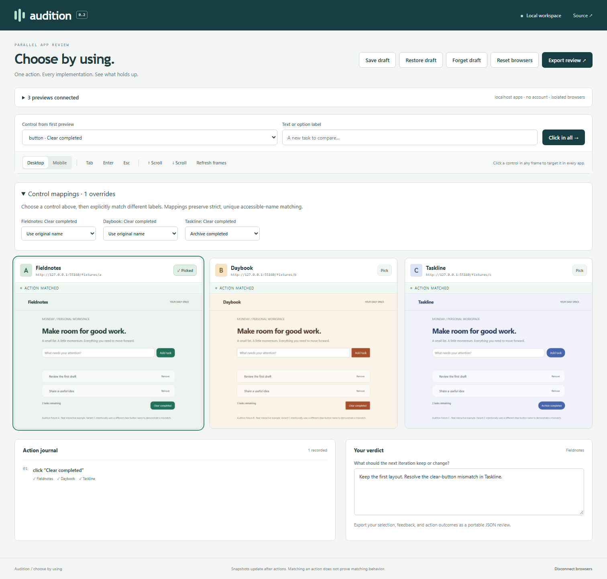

PARALLEL APP REVIEW / LOCAL FIRST
Three agents built it.
Which one feels right?
Operate competing implementations with one set of actions. Audition opens isolated browsers, matches named controls, and shows you where the experiences diverge.

Actual application capture. Taskline deliberately uses a different button name, making its mismatch visible.
Connect your branches
Bring two or three running localhost apps. Each gets its own clean browser context.
Try the same interaction
Fill a field, click a button, switch to mobile. Exact role and name matching keeps differences honest.
Give useful feedback
Choose a variant and export your verdict with the observed action outcomes.
Start with three working examples
git clone https://github.com/alfonza1/audition.git cd audition npm ci npx playwright install chromium npm run dev
Open http://127.0.0.1:4321 and choose
Open the live demo. Node.js 22.12+ required. On Linux,
install browser dependencies with
npx playwright install --with-deps chromium.
This page is the project introduction, not a hosted controller. Real app comparison runs on your computer. No API keys, model subscription, account, or paid service. Only loopback apps are supported; external requests and WebSockets are blocked. Browser reset does not reset app databases.